| ১৯৫১ | ফুকুশিমা ইন্ডাস্ট্রিস কর্পোরেশন কম্পানির প্রতিষ্ঠাতা নবু ফুকুশিমা সাহেবের হাত ধরে আসাহিকু ওসাকা নামক স্থানে যাত্রা শুরু করে,ফুকুশিমা শিল্প কর্পোরেশন নামে। | |
|---|---|---|
| ১৯৫৬ | ইওদুগাওয়া কু, ওসাকা মিতেজিমা নিশি স্থানে হেড অফিস এবং প্রধান মূল উৎপাদন কারখানা স্থানান্তরিত। | |
| ১৯৬২ | কোম্পানি দেশে প্রথম ই আর সিরিজের বাণিজ্যিক উৎপাদন শুরু করে, ই আর দেশের সর্বপ্রথম বাণিজ্যিক মানের রেফ্রিজারেটর।। | 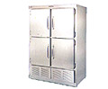 |
| ১৯৬৪ | অধিক বিক্রির সাথে তাল মিলিয়ে কোম্পানি ওপেন কেস ফ্রিজার রেফ্রিজারেটর উৎপাদন শুরু করে। | |
| ১৯৭৪ | মাইটেজিমা ৩-চোম, নিশি ইয়েদোগাওয়া-কিউ, ওসাকা তে নতুন প্রধান অফিস নির্মাণ করা হয়। | |
| ১৯৭৯ | কোম্পানীর উন্নয়নের সাথে সাথে শক্তি সঞ্চয়কারী ওপেন শোকেস বিক্রয় শুরু করে । | 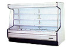 |
| ১৯৮৪ | শো-চো, কাটসুতা-গান এ নতুন ওকায়ামা কারখানা প্রতিষ্ঠিত করা হয় এবং উৎপাদন শুরু হয়। উন্নত প্রযুক্তির ওপেন শোকেস এসএক্স সিরিজ তৈরী ও বিক্রয় শুরু হয়। | 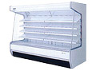 |
| ১৯৮৭ | কোম্পানি বাণিজ্যিক হিমায়ক রেফ্রিজারেটর পুনর্নিমাণ করে এবং স্বয়ংক্রিয় হিটার ডিফ ইআরএক্স সিরিজ তৈরী ও বিক্রয় শুরু করে। | 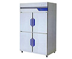 |
| ১৯৮৮ | কোম্পানি হিমানীনাশক এ প্রবেশ করে, যৌথভাবে নিপ্পন লাইট মেটাল কোং লিমিটেড এর সাথে "পরিষ্কার হিমানীনাশক " একটি উচ্চ আর্দ্রতার এয়ার হিমানীনাশক তৈরী করে। | |
| ১৯৮৯ | কোম্পানি বেকারি মেশিনের উন্নয়নের সাথে সাথে এ জগতে প্রবেশ করে। | |
| ১৯৯৪ | OTC ট্রেডিং স্ট্যাটাস JASDAQ এ অর্জিত হয় এবং IPO তৈরি করা হয়। | |
| ১৯৯৫ | ওসাকা সিকিউরিটিজ এক্সচেঞ্জ (পার্ট ২) এ তালিকাভুক্ত হয়। সিগা ফ্যাক্টরি তার বর্তমান স্থানে প্রতিষ্ঠিত হয় মীনাকুচি-চো, কোকা -শহর, সিগা- কেইন এবং উৎপাদন শুরু হয়। | |
| ১৯৯৬ | বাণিজ্যিক ফ্রিজ ফ্রিজারগুলি নতুন মাইক্রোপ্রসেসর নিয়ন্ত্রিত EXD সিরিজের উন্নয়নের সাথে এবং বিক্রির সাথে পুরোপুরি সংস্কার করা হয়। | 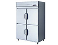 |
| ১৯৯৭ | কোম্পানি হংকং এ "ফুকুসিমা ইন্টারন্যাশনাল (এইচ.কে.) কোং লিমিটেড" প্রতিষ্ঠার জন্য ১০০% অর্থায়ন প্রদান করে। নতুন নেক্স্টার সিরিজ এর ফ্রিজর রেফ্রিজারেটরগুলির প্রদর্শনী উন্নয়ন এবং বিক্রয়। |
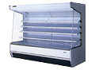 |
| ১৯৯৮ | নতুন এইচএসিসিপি সামঞ্জস্যপূর্ণ রান্নার পদ্ধতির "ব্লেট চিলার / শক ফ্রিজার। " এর উন্নয়ন এবং বিক্রয় | 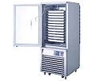 |
| ১৯৯৯ | নিম্ন তাপমাত্রা ইনকিউবেটর এবং ফার্মাসিউটিকাল ডেভেলপমেন্ট শোকেস রেফ্রিজারেটর; পদার্থবিজ্ঞান এবং রসায়ন ও চিকিৎসা সরঞ্জাম ক্ষেত্রে চিকিৎসা সরঞ্জাম চিহ্ন প্রবেশ। | 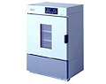 |
| ২০০০ | শিগা ফ্যাক্টরি ISO14001 সার্টিফিকেশন পায়। | |
| ২০০১ | "ফুকুশিমার S Net 24" এর ভূমিকা রিমোট ম্যানেজমেন্ট এবং কন্ট্রোলের মাধ্যমে 24 ঘন্টা রক্ষণাবেক্ষণ সেবা প্রদান করে।। | |
| ২০০২ | টোকিও স্টক আদান-প্রদানের তালিকাভুক্ত (পার্ট 2)। অকায়ামা কারখানা ISO9001 সার্টিফিকেশন পায়। সহায়ক হিসেবে ফুকুশিমা তুড়েই কোম্পানি লিমিটেড প্রতিষ্ঠিত হয়েছে। রিভারস-অসমুসিস পরিস্রাবণ সিস্টেম রো পানি ভেন্ডিং মেশিন উন্নত হয় |
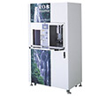 |
| ২০০৪ | শিগা ফ্যাক্টরি ISO9001 সার্টিফিকেশন পায়। সহায়ক হিসেবে ফুকুশিমা পি টি ই. ইন্টারন্যাশনাল লিমিটেড প্রতিষ্ঠিত হয়েছে। সহায়ক হিসেবে তাইওয়ান ফুকুশিমা ইন্টারন্যাশনাল কোম্পানি লিমিটেড প্রতিষ্ঠিত হয়েছে। |
|
| ২০০৫ | কোম্পানী টোকিও স্টক এক্সচেঞ্জ (অংশ ১) এবং ওসাকা সিকিউরিটিজ এক্সচেঞ্জ (অংশ ১) এ তালিকাভুক্ত হয়।। | |
| ২০০৬ | পরবর্তীতে "বেইজিং ফিউনজিং রেফ্রিজারেশন ও যন্ত্রপাতি ইলেকট্রিক কোং লিমিটেড" নাম পরিবর্তন করে নতুন নামকরণ করে "বেইজিং এয়ার শং-ফুকুশিমা যন্ত্রপাতি ইলেকট্রিক কোং লিমিটেড" নতুন কারখানাটি চালু করে। এরপরে ওকায়ামা কারখানা প্রতিষ্ঠিত হয় এবং বর্তমান ওকামামা কারখানার পাশে জমির কাজ শুরু হয়। ইউআরডি সিরিজের উন্নয়নের সাথে এবং উন্নত শক্তি সংরক্ষণের সাথে বাণিজ্যিক ফ্রিজ ফ্রিজের সম্পূর্ণ রিমডলিং করা হয়। | 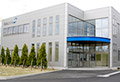 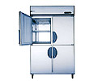 |
| ২০০৭ | কোম্পানী ইনভার্টার রেফ্রিজারেটর IR সিরিজ তৈরী ও বিক্রি শুরু করে। কোম্পানি এক্সিয়া-ইকো সিস্টেম তৈরী ও বিক্রি শুরু করে। | 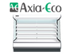 |
| ২০০৮ | শিল্প বিশ্বে প্রথমবার কোম্পানী কার্বন অফসেট দিয়ে ইনভার্টার রেফ্রিজারেটর তৈরী ও বিক্রি শুরু করে। দৃঢ় সহায়ক ফুকুশিমা আন্তর্জাতিক (সাংহাই) কোং লিমিটেড প্রতিষ্ঠিত হয়। | 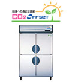 |
| ২০০৯ | হাই-ব্রিজ কোং লিমিটেড কোম্পানির সকল স্টকগুলিকে অর্জন করে। কোম্পানী হাই-ব্রিজ কোং এবং তাকাহাসি ম্যানুফ্যাকচারিং কোং লিমিটেড তৈরী করে যেটি একটি উচ্চ-ব্রিজ কোম্পানির সম্পূর্ণ মালিকানাধীন একটি সাবসিডিউরিটির সহায়ক সংস্থা। কোম্পানি নতুন ইনভার্টার শোকেস ফ্রিজার রেফ্রিজারেটর IM সিরিজ তৈরী এবং বিক্রি শুরু করে। |
|
|||||||||||